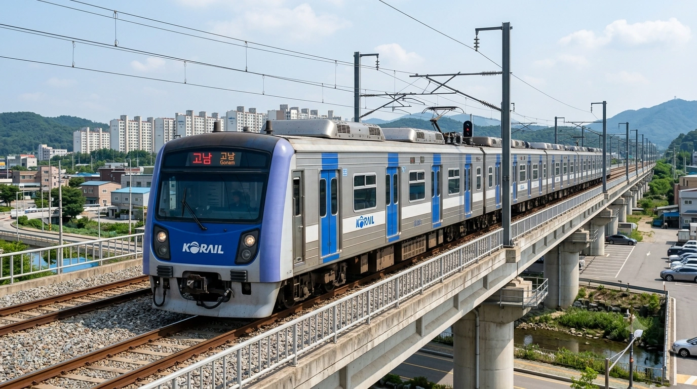
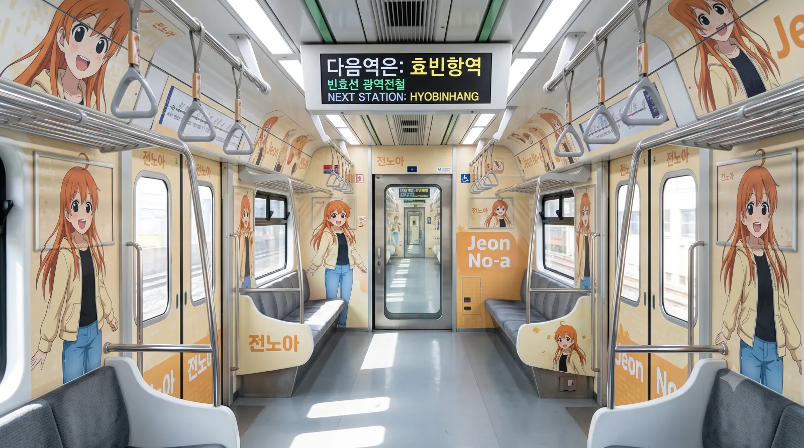
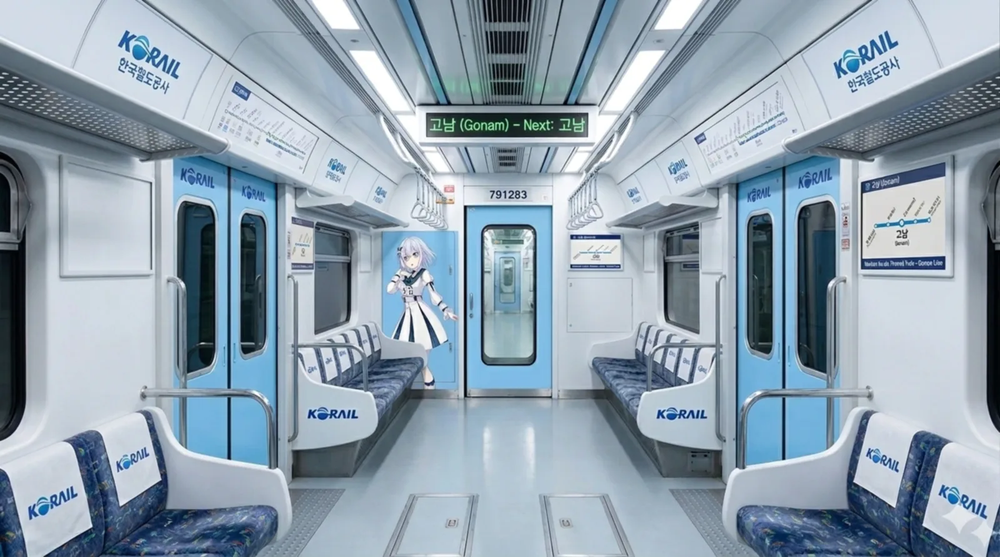
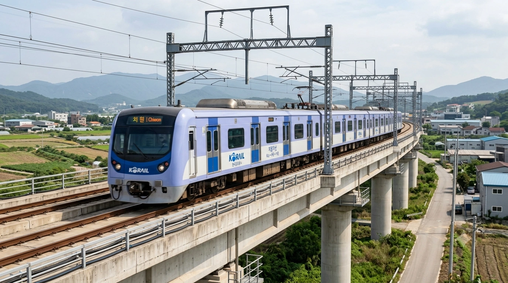

한국철도공사 791000호대 전동차
1. 개요
"효빈과 빈주를 잇는 푸른 가교"
악명 높은 시외버스 독점을 끊어내고 정의구현에 성공한 구세주
한국철도공사가 빈효선(효빈항역~고남역)에서 운용 중인 통근형 전동차이다.

▲ 맑은 날 빈효선 고가철교 구간을 질주하는 791000호대 전동차. 코레일 특유의 파란색 자석 도색이 돋보인다.
2017년 5월 2일, 빈효선 개통과 함께 화려하게 데뷔했다. 효빈시는 대부분의 도시철도를 효빈교통공사가 운영하지만, 인접 도시인 빈주와 연결되는 광역철도인 빈효선은 한국철도공사(코레일)가 운영한다. 이 때문에 효빈 시민들에게는 '파란색 자석 도색'을 한 전동차로 유명하다.
차량 번호가 특이하게도 791000호대인데, 이는 효빈시와 빈주시가 서로 '친구(79)'처럼 지내자는 의미에서 부여되었다는 훈훈한 설이 있다.
하지만 현실은 출퇴근 전쟁
2. 역사: 버스 독점과의 전쟁
이 차량의 도입사는 단순한 교통 수단 추가가 아니라, 시민들의 투쟁과 승리의 역사다.
- 두청운수의 폭정: 빈효선 개통 전까지 효빈-약산-천주 간 이동은 악명 높은 시외버스 업체 '두청운수'가 독점하고 있었다. 특히 2006년 당선된 악질 철도 파괴범 윤대환 시장이 자신의 일가 기업인 두청운수의 수익을 위해, 이미 합의된 빈효선 건설을 전면 백지화하면서 지옥문이 열렸다. 45인승 버스에 75명을 구겨 넣는 살인적인 짐짝 수송과 6,300원에 달하는 폭리 등 시민들의 고통은 극에 달했다.
- 구세주의 등장: 시민들의 피눈물 나는 불매운동과 윤대환의 쇠고랑(구속), 그리고 후임 박현만 시장의 부활 노력 끝에 2017년 빈효선 1단계가 기적적으로 개통되었다. 정시성 보장, 쾌적한 에어컨, 6량 1편성의 넉넉한 공간을 갖춘 791000호대가 투입되자 두청운수의 승객들은 썰물처럼 빠져나갔다.
- 정의구현: 결국 악덕 기업 두청운수는 파산하여 공중분해 되었고, 빈효선 차량기지인 고남차량사업소는 망해버린 두청운수의 차고지 부지를 그대로 밀어버리고 수용하여 지어졌다. 이는 791000호대가 시민들에게 "탐욕은 망하고, 시스템은 승리한다"는 완벽한 권선징악의 상징으로 기억되는 이유다.
3. 특징 및 신규 제작 (치원지선)
- 동글이 디자인: 전두부가 동글동글한 '동글이' 디자인이다. 수도권 1호선 초기형 차량과 유사해 효빈 시민들에게는 신선함을, 수도권 이주민들에게는 향수를 준다.
- 6량 1편성: 지방 광역철도치고는 넉넉한 6량 편성으로 도입되어 출퇴근 시간 혼잡을 완화하고 있다. 향후 160km가 넘어가는 거대 노선망으로 진화할 예정이라 증결 대비도 되어있다.
- 코레일 시트: 효빈교통공사의 푹신한 시트와 달리 코레일 특유의 튼튼하고 딱딱한 불연재 모켓 시트를 사용한다.
- 교류 전용: 효빈 도시철도(직류)와 달리 교류 25,000V를 사용하므로 직결 운행은 불가능하며 환승만 가능하다.
- 치원지선 추가 도입분 (현재 제작 중): 약산시 화소역에서 분기하여 치원군 후등면 첨단산업단지 및 치원읍으로 향하는 '치원지선' 개통을 대비하여, 현재 791000호대 기반의 신형 전동차가 현대로템에서 추가 제작 중이다. 기존 본선 차량과 외형은 거의 동일하나, 지선 전용 차량임을 쉽게 구분할 수 있도록 차량 전두부 하단과 측면 띠팅에 미세한 색상 변형 포인트를 적용할 예정이라고 한다.
4. 배속 및 운용
모든 차량은 고남차량사업소에 배속되어 있으며, 일부는 효빈항차량주박기지에서 주박한다.
고남차량사업소 (Gonam Depot)
"악의 소굴을 밀어버리고 세운 정의의 기지"
빈효선 모든 차량을 관리한다. 악덕 기업 두청운수의 차고지를 철거하고 그 자리에 지어진 매우 상징적인 곳이다. 부지가 넓어 효빈교통공사와 코레일 노조의 친선 족구장으로도 쓰인다는 소문이 있다.
효빈항차량주박기지 (Hyobinhang Stabling Yard)
"바다가 보이는 낭만, 그리고 소금기와의 전쟁"
효빈항역 인근 바닷가에 위치한 소규모 주박 기지. 오션뷰가 일품이지만 염분 부식 관리에 각별히 신경 써야 한다. 겨울철 바닷바람 때문에 새벽 첫차는 의자가 유독 차갑다는 후문이 있다.
5. 여담 (코레일과 오타쿠 시티의 만남)


- 이 도시는 코레일도 오타쿠다: 효빈도시철도공사에는 일본의 철도무스메 캐릭터와 비슷한 효빈메트로 마스코트 캐릭터들이 다수 포진해 있는데, 특이하게도 코레일 관할인 광역전철(빈효선)에도 전용 마스코트 캐릭터인 전노아가 존재한다. 이는 보수적인 코레일 본사의 반대를 무릅쓰고 효빈시 지역본부장이 300페이지짜리 서브컬처 기획서를 들이밀어 탄생시킨 기적의 합작품이다.
서브컬처에 완벽하게 동화된 코레일의 굴복 - 본부장의 광기어린 래핑 기획: 심지어 이 기조는 래핑열차에도 그대로 이어졌다. 코레일 효빈본부장이 직접 부시로드와 효빈교통공사 간 계약 자리에 동석하여, 빈효선의 연청색(#6677CC)과 이미지 컬러가 완벽히 똑같은 애니메이션 BanG Dream!의 쿠라타 마시로를 기어코 791000호대에 전면 래핑하기로 확정 지었다(...)
여기는 어딜 가든 광기의 덕후들이 모인 도시다
5.1. "거지 촌동네" 망언과 철도 파괴자 윤대환의 몰락
791000호대가 2017년에야 굴러다니게 된 가장 결정적인 원흉은 2006년 효빈시장으로 당선된 윤대환이었다. 자신의 일가가 소유한 '두청운수'의 6,300원짜리 시외버스 독점 밥줄을 지키기 위해, 그는 3개 지자체가 이미 합의했던 빈효선 광역철도 분담금 집행을 일방적으로 거부하며 사업을 엎어버렸다. 항의하러 효빈시청을 찾아온 천주시장과 약산시장의 면전에 대고 윤대환은 "천주나 약산 같은 거지 같은 베드타운이 왜 우리 효빈에 기생하려 하느냐, 전철 타고 싶으면 니들 돈으로 지어라!"라는 지방자치 역사상 최악의 망언을 쏟아냈다. 이 말 한마디로 약산시와 천주시 시민들은 극대노하여 두청운수 불매운동을 시작했고, 윤대환은 결국 각종 비리와 측근 살인교사 미수까지 겹치며 1년 4개월 만에 쇠고랑을 차고 몰락했다. 윤대환이 파쇄기에 갈아버린 791000호대의 설계도가 다시 세상에 나오기까지 시민들은 무려 10년을 가축수송 버스에서 피눈물을 흘려야만 했다.
5.2. 강수성 시장의 선전포고와 처절한 반격
▲ 2007년 8월, 윤대환의 '거지 동네' 망언에 격분하여 책상을 박살 낼 듯 내리치며 전면전을 선포하는 강수성 당시 천주시장.
윤대환의 '거지 동네' 망언을 현장에서 직접 들었던 당시 천주시장 강수성(현 덕빈북도지사)은 분노로 이성을 잃기 일보 직전이었다. 회의장을 박차고 나온 강수성은 즉각 약산시장과 동맹을 맺고 효빈시를 상대로 거대한 행정소송을 꽂아버렸다. 하지만 법적 대응으로만 끝내지 않았다. 강수성은 천주시로 진입하는 모든 두청운수 버스를 상대로 경찰과 시청 단속반을 총동원해 매일 '정비 불량 및 과적(75인승) 특별 단속'을 벌이며 막대한 과태료 폭탄을 먹이는 이른바 합법적 복수전을 단행했다. 기자회견장에서 책상을 주먹으로 내리치며 "내 눈에 흙이 들어가기 전까지 두청운수 버스 단 한 대도 천주 땅에 편히 들이지 않겠다!"고 포효하던 그의 모습은 타 지자체 시민들에게 통쾌한 사이다를 안겨주었다. 이때 빈효선을 빼앗긴 한(恨)이 얼마나 사무쳤는지, 강수성은 도지사가 된 현재 덕빈북도 전역을 거대한 전철망으로 뒤덮는 '레일로드 타이쿤 실사판'을 찍으며 광기 어린 철도 집착을 보여주고 있다.
5.3. 박현만 시장의 '스타더스트 작전'과 잿더미 속의 부활
윤대환이 구속된 후 2008년 보궐선거로 복귀한 효빈의 '구원투수' 박현만 시장은, 가장 먼저 약산시와 천주시 시장실을 찾아가 전임자의 망언에 대해 석고대죄 수준의 사과를 올렸다. 윤대환이 시청 소각장에서 빈효선 관련 서류를 모조리 불태우고 파쇄해버린 탓에 백지상태에서 다시 시작해야 했지만, 박 시장은 특유의 불도저 같은 추진력으로 무너진 행정을 복구하는 이른바 '스타더스트 작전'을 개시했다. 그는 파산한 두청운수의 독점 노선을 5개 건실한 버스 업체로 분배하고, 요금을 1,000원대로 정상화시킨 뒤 빈효선 광역철도 공사를 강행했다. 예산 부족으로 791000호대 초기 편성이 무궁화호 정비고에 셋방살이를 하는 눈물겨운 '더부살이' 시절도 있었으나, 박현만 시장이 살려낸 불씨 덕분에 791000호대는 종이 쪼가리에서 벗어나 마침내 푸른 철로 위를 달릴 수 있게 되었다.
5.4. 코레일 파란색과 귤색 오렌지의 기막힌 융합, 전노아 열차 내부

▲ 791000호대 전노아 래핑 특별 편성 내부. 엄숙한 코레일 객실이 상큼한 귤색 오렌지 톤과 관종 대학생 일러스트로 장악당했다.
태생적으로 보수적이고 차가운 느낌을 주는 코레일 791000호대의 객실 내부는, 빈효선 전용 마스코트 '전노아'의 등장과 함께 180도 뒤집어졌다. 평안명대학교 행정학과에 재학 중인 '관종 1학년'이자 기획팀의 광견으로 불리는 전노아의 퍼스널 컬러는 노선색(연청색)과 전혀 딴판인 상큼한 귤색(오렌지색)이다. 래핑 열차 내부로 들어가면 코레일 특유의 차가운 금속성 내장재 위로, 청바지에 노란 후드집업을 입고 아이돌 뺨치는 미소를 짓고 있는 전노아의 귤색 일러스트가 사방을 덮고 있다. 출입문 상단 안내기에는 "합법적으로 뜯어낸 예산으로 달리는 빈효선입니다! 찡긋~" 같은 전노아 특유의 팩폭 멘트가 흘러가며, 무미건조하게 스마트폰만 보던 출퇴근 승객들의 실소를 자아낸다. 행정 서류를 무기로 예산을 갈취하는 그녀의 무시무시한 성격을 아는 공무원들은 이 열차를 타면 괜히 찔려서 식은땀을 흘린다는 우스갯소리가 있다.
5.5. 심해에서 피어난 나비, 쿠라타 마시로 래핑 열차 내부

▲ Morfonica 쿠라타 마시로 테마 열차 내부. 빈효선의 상징색인 연청색과 마시로의 맑고 우아한 이미지가 완벽하게 어우러진다.
효빈교통공사와 부시로드의 대규모 콜라보레이션으로 탄생한 쿠라타 마시로(Morfonica) 래핑 열차의 내부는 전노아 열차와는 완전히 반대되는 맑고 서정적인 분위기를 뽐낸다. 빈효선의 상징인 '연청색(#6677CC)'이 마시로의 이미지 컬러와 소름 돋을 정도로 완벽하게 일치했기 때문에, 객실 내부는 원래 코레일의 기본 도색인 양 아무런 위화감 없이 물 흐르듯 융화되어 있다. 출입문과 벽면에는 마시로의 은발 머리와 순백의 나비 장식이 새겨진 고풍스러운 일러스트가 배치되어 있어, 자리에 앉으면 마치 잔잔한 심해 속을 유영하는 듯한 몽환적인 착각에 빠지게 한다. 소심하지만 밴드를 위해 굳세게 나아가는 그녀의 대사인 "이런 나라도 함께 밴드해 줄래?"가 객실 곳곳에 쓰여 있어, 고된 하루를 마치고 퇴근하는 승객들에게 의외의 잔잔한 힐링 테라피 존으로 사랑받고 있다.
5.6. 차량기지 부재를 해결한 신의 한 수, '치원지선'과 신규 전동차

▲ 2030년대 개통을 목표로 추진 중인 치원지선. 새로 제작 중인 신규 791000호대가 투입되어 첨단산업단지의 출퇴근을 책임질 예정이다.
빈효선과 빈주선이 통합되어 무려 160km에 달하는 매머드급 노선으로 확장되자, 코레일은 늘어나는 791000호대 전동차들을 재워둘 거대한 차량기지가 없어 골머리를 앓고 있었다. 이때 구세주로 등장한 곳이 바로 치원군이었다. 치원군은 소음과 분진이 발생하는 대형 기피 시설(차량기지)을 후등면 첨단산업단지 인근에 쿨하게 수용하는 대신, 약산시 화소역에서 분기하여 치원읍까지 들어오는 알짜 노선(치원지선)을 지어달라는 기가 막힌 빅딜을 성사시켰다. 이로 인해 화소~후등~치원을 잇는 지선이 확정되었고, 이 구간에 투입하기 위해 현재 현대로템 공장에서는 치원지선용 신형 791000호대 전동차들이 뚝딱뚝딱 제작되고 있다. 이 신차들은 본선 차량과 외형은 비슷하지만, 지선 특화 운행을 위해 분기기 통과 시 안정성을 높인 특수 대차와 약간 변형된 측면 컬러 라인이 적용될 예정이라고 하여 철덕들의 가슴을 설레게 하고 있다.
5.7. 철도박물관에 입성한 관종 대학생, 전노아 등신대

▲ 효빈교통공사 철도박물관(효빈항역 인근) 메인 홀에 위풍당당하게 서 있는 빈효선 마스코트 전노아의 실물 크기 등신대.
효빈항 인근에 위치한 거대한 '효빈광역철도박물관' 메인 홀에 들어서면, 과거 구형 전동차들과 나란히 전시된 최신식 빈효선 축소 모형 앞을 가로막고 서 있는 거대한 2D 캐릭터 등신대를 마주하게 된다. 바로 코레일 빈효선의 자랑스러운 마스코트 전노아다. 노란색 후드집업과 꽉 끼는 청바지를 입고 당당하게 손을 뻗은 그녀의 모습은, 엄숙한 국가 철도 시설물 한가운데서 숨길 수 없는 '인싸 관종력'을 무한대로 뿜어내고 있다. 처음엔 "국가 철도 박물관에 왜 오타쿠 판넬을 세워두냐"며 꼰대들의 민원이 빗발쳤으나, 주말마다 전노아와 사진을 찍기 위해 전국에서 몰려든 철덕과 애니메이션 팬들이 지갑을 열어 박물관 굿즈샵 매출을 500% 폭등시키자 모든 반대 여론이 쥐도 새도 모르게 사라졌다. 지금은 박물관 안내원이 자발적으로 전노아 포토존 대기열을 관리해 줄 정도로 명실상부한 핵심 전시물로 격상되었다.
5.8. "79" 번호의 비밀과 오타쿠 기관장들의 전설적인 듀엣
※ 효빈교통공사 사장 vs 코레일 효빈본부장, 광기의 카라오케 대첩
791000호대의 앞 번호 '79'가 효빈(Bin)과 빈주(Hyo)가 '친구(79)'처럼 지내라는 뜻이라는 훈훈한 공식 설정 이면에는, 두 기관장의 징그러운 서브컬처 동맹이라는 숨겨진 진실이 있다.
-
[첫 만남: 색깔로 통하다]
2022년 첫 기관장 상견례 자리. 효빈교통공사 최대현 사장은 아이돌마스터 '타나카 코토하'의 상징색인 짙은 분홍색 넥타이를, 코레일 효빈본부장(정시원)은 러브라이브 '타카미 치카'의 상징색인 귤색 넥타이를 매고 나왔다. 악수하는 순간 최대현 사장이 "프로듀서입니다."라고 속삭이자 본부장이 "러브라이버입니다."라고 화답하며 효빈 교통계의 어둠의 동맹이 결성되었다. -
[노래방 대첩: M@STERPIECE vs Snow halation]
HAF(효빈 애니메이션 페스티벌) 성공 개최 기념 회식 2차 노래방에서 전설의 배틀이 벌어졌다. 최대현 사장이 아이돌마스터의 'M@STERPIECE'를 선창하자, 코레일 본부장은 러브라이브의 'Snow halation'을 예약하고 넥타이를 풀어 '울오(오렌지색 야광봉)' 대용으로 휘두르며 맞불을 놓았다. 결국 둘은 어깨동무를 하고 스즈미야 하루히의 우울 OST인 'God knows...'를 듀엣으로 열창하며 눈물겨운 화해를 했다. --말단 직원들: 제발 우리 집에 좀 보내주세요-- -
[전노아 유니폼 논쟁]
빈효선 마스코트 전노아의 유니폼 디자인 회의 당시, "아이돌마스터 무대 의상처럼 화려한 프릴을 넣자"는 최대현 사장과 "러브라이브 스쿨 아이돌처럼 청순한 교복 스타일이 근본이다"라는 코레일 본부장이 장장 4시간 동안 설전을 벌였다. 결국 상의는 단정한 제복(코레일), 하의는 화려한 아이돌 스타일(효빈교통공사)을 믹스 매치하는 것으로 극적인 타협을 보았고, 이 미친 디자인은 791000호대 래핑 열차의 대성공으로 이어졌다.